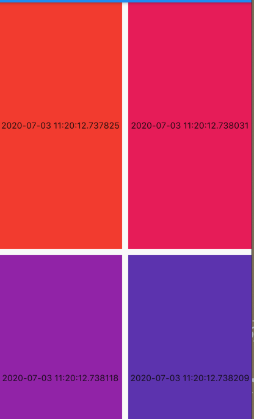

6.4 GridView
GridView是一个构成二维网格的列表，先看下它的属性：
GridView({
Axis scrollDirection = Axis.vertical,
bool reverse = false,
ScrollController controller,
bool primary,
ScrollPhysics physics,
bool shrinkWrap = false,
EdgeInsetsGeometry padding,
@required SliverGridDelegate gridDelegate, //控制子widget layout的委托
bool addAutomaticKeepAlives = true,
bool addRepaintBoundaries = true,
double cacheExtent,
List<Widget> children = const <Widget>[],
})
大多数属性在ListView已经介绍过了，在此不重复介绍了，如有疑问，请查看ListVIew章节，这边是多了一个SliverGridDelegate，这是Grivd的layout配置参数，有了它，子组件才有排列规则。
SliverGridDelegate是一个抽象类，定义了DridView layout的相关接口，子类需要实现他们的具体的布局算法。官方提供了已经实现好了的类，分别是SliverGridDelegateWithFixedCrossAxisCount和SliverGridDelegateWithMaxCrossAxisExtent,下边我们分别就介绍一个下他们。
SliverGridDelegateWithFixedCrossAxisCount
该子类实现了一个横轴为固定元素数量的布局算法，看下属性;
SliverGridDelegateWithFixedCrossAxisCount({
@required double crossAxisCount,
double mainAxisSpacing = 0.0,
double crossAxisSpacing = 0.0,
double childAspectRatio = 1.0,
})
| 属性 | 含义 |
|---|---|
| crossAxisCount | 横轴排列个数 |
| mainAxisSpacing | 主轴间隙 默认是0.0 |
| crossAxisSpacing | 副轴间隙 默认是0.0 |
| childAspectRatio | 子部件比例 默认是1.0 |
看下例子;我们实现了横轴排列4个，主轴和副轴间隙是10像素，比例是0.5.
List<Widget> list = new List();
for (int i = 0; i < 10; i++) {
list.add(Container(
height: 80,
color: Colors.primaries[i % Colors.primaries.length],
alignment: Alignment.center,
child: TestContainer(
title: DateTime.now().toString(),
)));
}
return GridView(
gridDelegate: SliverGridDelegateWithFixedCrossAxisCount(
crossAxisCount: 4,
mainAxisSpacing: 10,
crossAxisSpacing: 10,
childAspectRatio: 0.5),
children: list,
);
}
效果：
SliverGridDelegateWithMaxCrossAxisExtent
SliverGridDelegateWithMaxCrossAxisExtent({
@required this.maxCrossAxisExtent,
this.mainAxisSpacing = 0.0,
this.crossAxisSpacing = 0.0,
this.childAspectRatio = 1.0,
})
和上边不一样的就是maxCrossAxisExtent最大宽度，其他属性完全一致。如果横轴为500,参数maxCrossAxisExtent为150
,那么最终长度为125.因为每个部件是平均划分的。
例子：
List<Widget> list = new List();
for (int i = 0; i < 10; i++) {
list.add(Container(
height: 80,
color: Colors.primaries[i % Colors.primaries.length],
alignment: Alignment.center,
child: TestContainer(
title: DateTime.now().toString(),
)));
}
return GridView(
gridDelegate: SliverGridDelegateWithMaxCrossAxisExtent(
// crossAxisCount: 4,
maxCrossAxisExtent: MediaQuery.of(context).size.width / 2 + 100.0,
mainAxisSpacing: 10,
crossAxisSpacing: 10,
childAspectRatio: 0.5),
children: list,
);
}
效果：

GridView.builder
属性：
GridView.builder({
...
@required this.gridDelegate,
@required IndexedWidgetBuilder itemBuilder,
int itemCount,
...
})
| 属性 | 含义 |
|---|---|
| gridDelegate | 上文已介绍，布局算法实现 |
| itemBuilder | 子部件显示回调，当快要显示才会回调，滚出屏幕则销毁，也会再次回调该函数 |
| itemCount | 子部件数量,默认无限制 |
实例：
Widget _body() {
return GridView.builder(
gridDelegate: SliverGridDelegateWithMaxCrossAxisExtent(
// crossAxisCount: 4,
maxCrossAxisExtent: MediaQuery.of(context).size.width / 4 + 10.0,
mainAxisSpacing: 10,
crossAxisSpacing: 10,
childAspectRatio: 2),
itemBuilder: _buildCell,
itemCount: _list.length,
semanticChildCount: 13,
);
}
List<Widget> _list;
Widget _buildCell(BuildContext context, int index) {
if (index < _list.length - 1) {
return Container(
height: 80, alignment: Alignment.center, child: _list[index]);
} else if (_list.length < 100) {
_getData();
return Container(
alignment: Alignment.center,
child: RefreshProgressIndicator(),
);
} else {
return Container(
height: 80, alignment: Alignment.center, child: _list[index]);
}
}
@override
void initState() {
_list = new List();
_getData();
super.initState();
}
void _getData() async {
await Future.delayed(Duration(milliseconds: 1500));
_list.addAll([
Icon(Icons.directions),
Icon(Icons.title),
Icon(Icons.refresh),
Icon(Icons.dehaze),
Icon(Icons.ac_unit),
]);
setState(() {});
}
效果：

GridView子元素默认大小一致的，当然自己可以重写SliverGridDelegate，也可以在pub上使用三方写好的库,比如：flutter_layout_grid、flutter_staggered_grid_view等等。